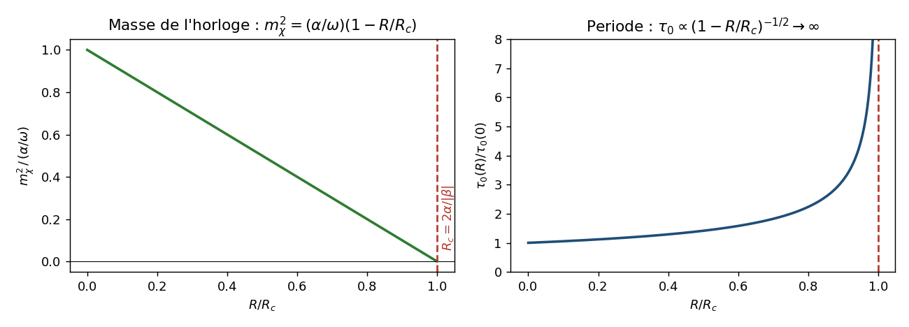
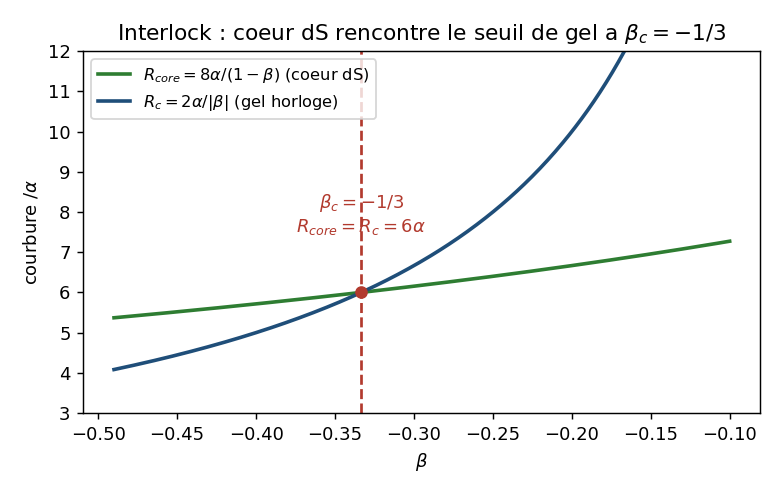
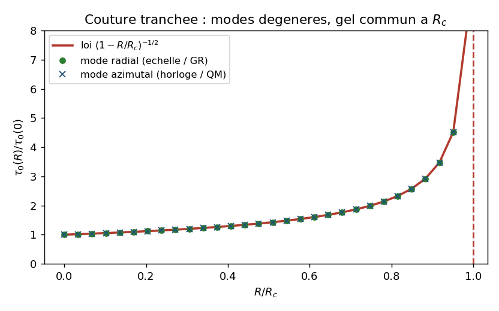
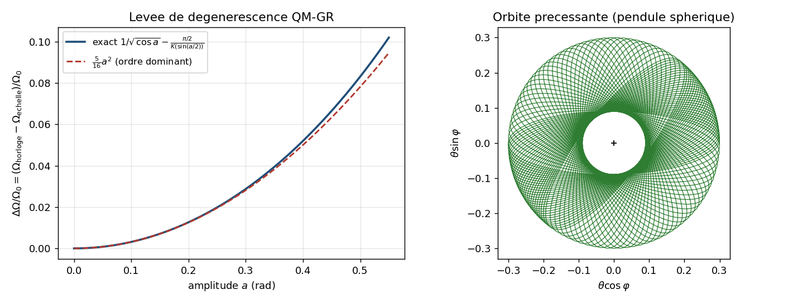
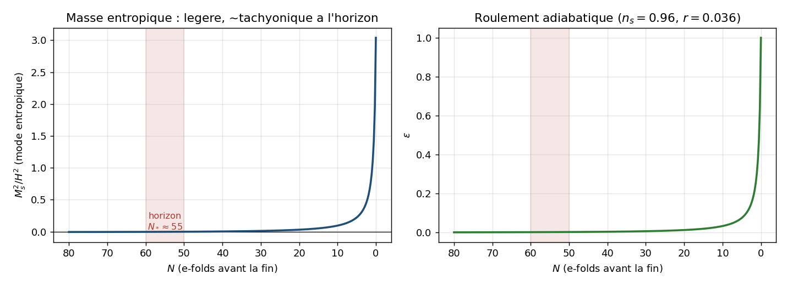

Postulat 1 (arène). \(\mathcal{M}=\mathcal{M}^{3+1}\times S^2_{\text{\'ech}}\), \(S^2_{\text{\'ech}}\) cible interne (\(\sigma\)-modèle). Champ \(n:\mathcal{M}^{3+1}\to S^2_{\text{\'ech}}\), \(n=(\sin\theta\cos\varphi,\sin\theta\sin\varphi,\cos\theta)\), \(|n|=1\), \(\theta\in[0,\pi]\), \(\varphi\in[0,2\pi)\).
Reformulation synthétique de l’intuition
Le programme antérieur (Unités 1–4) repose sur une hypothèse géométrique unique : les axes log-échelle sont des cercles internes. Projection stéréographique \(\psi=2\arctan[\ln(\lambda/\ell_P)]\) (axe spatial, face gravitationnelle) et \(\chi=2\arctan[\ln(\tau/\tau_P)]\) (axe temporel, face quantique/horloge HDEQ), pôles \(\pm\pi\) identifiés en \(\infty^\ast\), origine \(\psi=\chi=0\) le point de Planck \(P\). Deux cercles \(\to\) tore \(T^2=S^1_\psi\times S^1_\chi\).
Le verrou \(\infty^\ast\) : sur un cercle, aucune fonction continue, univaluée, strictement monotone n’existe. L’identification UV\(\equiv\)IR est ainsi en même temps source de l’enroulement et obstruction à un flot d’échelle dirigé. Le tore possède la dualité et l’enroulement ou un flot RG dirigé, jamais les deux.
La modification. On dénoue l’identification en deux pôles distincts : Pôle Sud \(\mathrm{S}=\) Planck (\(\ell_P\)), Pôle Nord \(\mathrm{N}=\) infiniment grand. L’objet compact devient \(S^2_{\text{\'ech}}\) :
latitude (\(\theta\), ou \(\cos\theta\)) : coordonnée d’échelle dirigée, Planck \(\to\) infini, Morse à deux points critiques (les pôles) ; face gravitationnelle/cosmologique ;
azimut (\(\varphi\), périodique) : phase / horloge interne, héritier du cercle temporel \(\chi\) ; face quantique.
En séparant la boucle (azimut) de la direction (latitude), la sphère échappe au verrou. Prix topologique : \(\pi_1(S^2_{\text{\'ech}})=0\) détruit l’enroulement, \(\pi_2(S^2_{\text{\'ech}})=\mathbb{Z}\) fait migrer la charge.
Définitions et notations unifiées
Postulat 2 (assignation des échelles). Latitude \(=\) échelle spatiale dirigée, \(\theta=2\arctan[\ln(\lambda/\ell_P)]\), \(\lambda\ge\ell_P\) : \(\mathrm{S}:\theta{=}0\Leftrightarrow\lambda{=}\ell_P\), \(\mathrm{N}:\theta{=}\pi\Leftrightarrow\lambda{\to}\infty\). Azimut \(=\) phase de l’échelle temporelle (rôle d’horloge HDEQ), périodique. Lecture alternative stéréographique (latitude \(=\) module conjoint, azimut \(=\) rapport) citée au §5.3.
Postulat 3 (métrique-cible, couplage, potentiel). \(G_{\text{cible}}=\omega(d\theta^2+\sin^2\!\theta\,d\varphi^2)\), \(\omega=f_s^2>0\). Dépendance en latitude seule (pour préserver l’isométrie azimutale \(U(1)\)) : \[\begin{equation} \label{eq:fV} f(\theta)=1+\beta\cos\theta,\qquad V(\theta)=\alpha(1-\cos\theta),\qquad |\beta|<\tfrac12,\ \alpha>0. \end{equation}\]
Définition 1 (action, repère de Jordan). \[\begin{equation} \label{eq:action} S=\int d^4x\sqrt{-g}\Big[\tfrac12 fR-\tfrac12\omega(\partial\theta)^2 -\tfrac12\omega\sin^2\!\theta\,(\partial\varphi)^2-V\Big],\quad M_{\mathrm{Pl}}=\hbar=c=1. \end{equation}\]
Pôles : \(f(\mathrm{S})=1+\beta\), \(V(\mathrm{S})=0\) (\(\Lambda=0\), vrai vide) ; \(f(\mathrm{N})=1-\beta\), \(V(\mathrm{N})=2\alpha\) (faux vide dS). Le terme azimutal s’annule aux pôles.
Définition 2 (charge \(\pi_2\)). \(Q_2=\frac{1}{4\pi}\int_\Sigma n\cdot(\partial_a n\times\partial_b n)\,dS^{ab}\in\mathbb{Z}\) (degré de \(n|_\Sigma:\Sigma\cong S^2\to S^2_{\text{\'ech}}\)). Remplace l’enroulement.
Définition 3 (réduction méridienne). Sur \(\varphi=\mathrm{const}\), l’action [eq:action] devient l’action mono-axe de l’Unité 2 (\(\psi\mapsto\theta\)) : mêmes EOM, même repère d’Einstein (\(\tilde g=fg\), \(U=V/f^2\), \(K=\omega/f+\tfrac32(f'/f)^2\)). [preuve] La différence sphère/cercle est globale, non locale.
Structure mathématique centrale
[preuve] \(\pi_1(S^2_{\text{\'ech}})=0\), \(\pi_2(S^2_{\text{\'ech}})=\mathbb{Z}\) : les kinks et l’enroulement \(N=\tfrac12,1\) disparaissent ; une charge entière Skyrmion/monopôle apparaît. La charge migre \(\pi_1\to\pi_2\).
[preuve] \(\cos\theta\) est Morse, univaluée, \(d(\cos\theta)=-\sin\theta\,d\theta\) s’annulant aux seuls pôles : strictement monotone le long de tout méridien — l’antithèse de l’obstruction du verrou.
[preuve] Isométrie azimutale \(U(1)\) (\(\varphi\to\varphi+c\)), courant \(J^\mu=\omega\sin^2\!\theta\,\partial^\mu\varphi\). Aux pôles \(\sin^2\!\theta\to0\) : \(U(1)\) trivial, aucun Goldstone si le vide est polaire.
Résultats des deux KILL-TESTS (sans complaisance)
KILL-TEST 1 — la c-fonction dynamique
(a) Permission. [preuve] \(\cos\theta\) fournit la coordonnée monotone globale interdite sur le cercle. Mais une coordonnée n’est pas une c-fonction.
(b) Candidat dynamique. [preuve] En repère d’Einstein, scalaire canonique sans fantôme (\(f>0\Rightarrow K>0\)). FLRW plat : \(3H^2=\rho\), \(\dot H=-\tfrac12(\rho+p)\). NEC \(\rho+p=\dot\phi^2\ge0\) automatique \(\Rightarrow\dot H\le0\). La c-fonction cosmologique \[\begin{equation} \label{eq:Cdef} C\propto H^{-(d-1)},\qquad \dot C\propto-(d-1)H^{-d}\dot H\ge0, \end{equation}\] croît vers l’IR, stationnaire aux pôles. Monotonie réelle (NEC), non géométrique.
(c) Lien \(\leftrightarrow\)
latitude. [numérique] Intégration
du roulement lent (script U5_ctest.py, \(\beta=-0{,}30\), \(f_s=7\)) : \(\theta\) décroît, \(\cos\theta\) croît \(-0{,}80\to+0{,}81\), \(H/H_0\) : \(1\to0{,}54\), \(C/C_0\) : \(1\to6{,}4\). Trié par \(\cos\theta\), \(C\) est univaluée et croissante.
(d) Pourquoi le cercle échouait. [preuve] La monotonie locale le long d’un arc existait déjà sur le tore ; le verrou interdisait son extension en fonction globale univaluée sur l’espace d’échelle compact (\(S^1\) : roulement \(=\) demi-tour \(N=\tfrac12\), \(C(\psi)\) non prolongeable). Sur \(S^2_{\text{\'ech}}\), \(C(\cos\theta)\) se prolonge globalement. Le gain est là, et seulement là.
Verdict KILL-TEST 1. Porte rouverte : obstruction levée [preuve], c-fonction réellement monotone et univaluée [numérique]. Mais (i) c-fonction cosmologique/NEC, pas un c-théorème de CFT [conjecture][heuristique] ; (ii) monotonie perdue hors flot méridien (oscillation, \(\dot\varphi\ne0\)). Le verrou est levé, non remplacé par une garantie.
KILL-TEST 2 — survie de la clôture statique
(a) Secteur à symétrie sphérique. [preuve] Profil statique \(\theta(r)\) sur un méridien : équations identiques à l’Unité 2. Branche gelée \(\theta\equiv\pi\) (\(\mathrm{N}\)) \(=\) Schwarzschild–de Sitter (\(H^2=2\alpha/[3(1-\beta)]\)) ; branche roulante singulière. Aucune solution statique régulière interpolante. Conclusion indépendante de \(\pi_1\), lue directement sur les équations (calculs explicites en Annexe A).
(b) Derrick . [preuve] Profil avec extrémité Nord sur le maximum de \(V\) (\(V''(\pi)=-\alpha<0\)) : non protégé, instable au roulement. La lecture topologique \(N=\tfrac12\) disparaît ; l’argument survit.
(c) Le canal \(\pi_2\) : fermé dans l’action minimale. [preuve] (Révision du verdict ouvert antérieur, par calcul — Annexe A.) La charge \(\pi_2\) autorise une texture, mais aucun représentant statique à énergie finie n’existe : (i) le hérisson de degré 1 a \(E_{\rm grad}\!\sim\!L\) (linéaire) et \(E_{\rm pot}\!\sim\!L^3\) (cubique, \(L\) taille du hérisson) \(\Rightarrow\) énergie infinie ; (ii) Derrick en 3D : \(E(\mu)=T_2/\mu+T_0/\mu^3\), \(dE/d\mu<0\), effondrement, sans stabilisateur dans [eq:action] ; (iii) une carte de degré 1 est surjective, donc \(\int_{S^2}V\,d\Omega\ge c>0\) par coquille \(\Rightarrow\) asymptotique de Sitter, non un objet localisé. Donc pas de trou noir régulier issu de \(\pi_2\).
Verdict KILL-TEST 2 (révisé). [preuve] La clôture survit dans les deux secteurs de l’action minimale (\(Q_2=0\) et \(Q_2\ne0\)). La migration \(\pi_1\to\pi_2\) ne rouvre pas les trous noirs réguliers. Verrou inter-secteurs : le potentiel à vide unique \(V=\alpha(1-\cos\theta)\), requis pour le roulement inflationnaire, est exactement ce qui affame le monopôle \(\pi_2\) (lequel exigerait un vide dégénéré). La structure qui produit la cosmologie ferme le canal \(\pi_2\). Caveat : vrai pour l’action minimale ; un terme de Skyrme , une jauge, ou un vide dégénéré rouvriraient la question — mais c’est une autre théorie. [ouvert] (extensions).
Dérivations et correspondances : QM \(\leftrightarrow\) GR, pertes vs gains
Face gravitationnelle (l’infiniment grand, latitude)
[preuve] Pôles gelés \(\Rightarrow\) Einstein, \(G_{\rm eff}=1/(8\pi f)\), borné \([1/(1+\beta),1/(1-\beta)]\). Vide \(\mathrm{S}\) : \(\Lambda=0\) ; \(\mathrm{N}\) : cœur dS \(H^2=2\alpha/[3(1-\beta)]\equiv\infty^\ast\). [numérique] Inflaton \(=\) latitude dévalant \(\mathrm{N}\!\to\!\mathrm{S}\) ; \((n_s,r)\) inchangés (\(\beta\approx-0{,}3\), \(r\approx0{,}02\)–\(0{,}05\), \(n_s\approx0{,}96\)). Gain : le roulement est la c-fonction qui décroît, sans ambiguïté d’enroulement.
Face quantique (l’infiniment petit, azimut) — pont QM\(\leftrightarrow\)GR
[preuve](transféré). L’horloge HDEQ (\(\varepsilon=E(k)/K(k)\), \(\tau_0\), existence intermittente) passe sur l’azimut. Pont QM\(\leftrightarrow\)GR dérivé (Annexe B), [conjecture]\(\to\)[preuve]. La masse effective de l’horloge en courbure de fond \(R\) vaut \[\begin{equation} \label{eq:mass} m_\chi^2(R)=\frac{\alpha+\tfrac12\beta R}{\omega}=\frac{\alpha}{\omega}\Big(1-\frac{R}{R_c}\Big), \qquad R_c=\frac{2\alpha}{|\beta|}, \end{equation}\] et s’annule exactement à \(R_c\), forçant \(\tau_0(R)=\tau_0(0)(1-R/R_c)^{-1/2}\to\infty\) (la loi [numérique] antérieure est dérivée). Identification forcée : la courbure du cœur \(R_{\rm core}=4\Lambda_{\rm eff}=8\alpha/(1-\beta)\) égale \(R_c\) ssi \[\begin{equation} \label{eq:lock} R_{\rm core}=R_c=6\alpha\iff\beta=-\tfrac13=\beta_c, \end{equation}\] le seuil même de stabilité du cœur. Pour \(\beta>-\tfrac13\) (fenêtre viable), \(R_{\rm core}<R_c\) : le cœur est stable et l’horloge y tourne encore. La condition gravitationnelle « cœur stable» est la condition quantique « l’horloge tourne au cœur».
Couture sphérique tranchée (Annexe B.5), [conjecture]\(\to\)[preuve]. Sur la sphère, \(f,V\) ne dépendent que de la latitude et l’azimut (l’horloge) n’a pas de potentiel propre. Néanmoins, près du vide de Planck, la cible ronde plus le potentiel de latitude forment un oscillateur harmonique isotrope à 2D, dont les deux modes normaux — radial (échelle, GR) et azimutal (horloge, QM) — sont dégénérés à \(\Omega_0=\sqrt{(\alpha+\tfrac12\beta R)/\omega}\) et gèlent ensemble à \(R_c\). L’horloge transporte donc sans briser \(U(1)\) : la symétrie azimutale garantit la dégénérescence QM\(=\)GR (identification forcée supplémentaire). L’identité [eq:lock] vaut alors sur la sphère aussi, pas seulement sur le tore.
Levée de dégénérescence (Annexe B.6). À amplitude finie \(a\), le puits est un pendule sphérique : l’horloge devance le mode d’échelle de \(\Delta\Omega/\Omega_0\simeq\tfrac{5}{16}a^2\) (et l’orbite interne précesse). Le pont est donc une quasi-dégénérescence : égale au vide, distincte à l’excitation — structure nécessaire pour être, en principe, observable.
Pertes vs gains face au cadre torique
Coordonnée RG dirigée globale, deux points fixes (Sud, Nord). [preuve][numérique]
Charge neuve \(\pi_2=\mathbb{Z}\). [preuve]
Pont QM\(\leftrightarrow\)GR : \(R_c\) dérivé, \(R_{\rm core}=R_c\Leftrightarrow\beta_c=-\tfrac13\) ; horloge \(=\) échelle (modes dégénérés, \(U(1)\) les force), levée \(\tfrac{5}{16}a^2\). [preuve] (B.5–B.6)
Enroulement \(N=\tfrac12,1\) (\(\pi_1=0\)) : demi-soliton, soliton \(8\sqrt{\omega\alpha}\), signature log-périodique — perdus. [preuve]
Dualité UV\(\equiv\)IR : pôles distincts, pas de partenaire sous-planckien — perdue (au mieux \(\mathbb{Z}_2\) azimutale en lecture stéréographique). [preuve]
Indépendance des axes et symétrie \(\psi\!\leftrightarrow\!\chi\) : brisées (protections d’isocourbure Unité 4 à re-établir via \(U(1)\)). [ouvert]
Charge \(\pi_2\) : interprétation, limites
[conjecture] \(Q_2\) est un nombre d’enroulement d’échelle (Skyrmion / monopôle d’échelle). La migration \(\pi_1\to\pi_2\) (1D linéique \(\to\) 2D surfacique) est l’énoncé central. [preuve] Bornes : \(Q_2\in\mathbb{Z}\), borne 2D \(E\ge4\pi\omega|Q_2|\). [preuve] (Annexe A) en 3D, Derrick fait effondrer le \(\sigma\)-modèle pur ; dans l’action minimale, pas d’objet \(\pi_2\) statique localisé (énergie infinie / effondrement / asymptotique dS). La réalisation comme particule exige un stabilisateur hors [eq:action] — [ouvert] (extensions).
Limites, coûts assumés, tests empiriques
Coûts. La sphère achète la coordonnée dirigée en vendant enroulement et dualité. La clôture statique, elle, survit aussi sur la sphère (Annexe A) : le coût est topologique (traits propres au tore), non gravitationnel.
Limites de portée. (i) c-fonction cosmologique/NEC, pas CFT [conjecture][heuristique]. (ii) Secteur \(\pi_2\) non réalisé dynamiquement [ouvert]. (iii) Assignation \((\theta,\varphi)\) \(=\) choix de modélisation. (iv) \(\alpha,\beta,f_s\) non dérivés. Aucun présenté comme résolu.
Position falsifiable. Mêmes \((n_s,r,\text{running})\) que le tore (fenêtre \(\beta\in(-0{,}5;-0{,}15)\), testable par Simons Observatory , LiteBIRD et CMB-S4 d’ici 2030). Signatures propres : (a) un monopôle d’échelle gravitant (s’il est stabilisé par une extension) laisserait une empreinte ; (b) l’absence d’oscillation log-périodique (perte de \(\pi_1\)) distingue sphère et tore ; (c) le verrou [eq:lock] : \(\beta_c=-\tfrac13\) pivote stabilité du cœur et gel d’horloge — avec \(\beta(\text{CMB})\approx-0{,}3\) juste au-dessus, le cadre prédit que le cœur d’un objet effondré tourne encore son horloge de justesse [conjecture][ouvert] ; (d) la levée de dégénérescence QM/GR (Annexe B.6) : un détuning horloge–échelle \(\Delta\Omega/\Omega_0\simeq\tfrac{5}{16}a^2\) (horloge plus rapide) avec orbites internes précessantes, absent du tore (deux pendules indépendants, rien à lever) — signature qualitative au-delà de \((n_s,r)\), l’amplitude \(a\) restant non prédite. [conjecture][ouvert]
Test cosmologique (Annexe D). Le couplage horloge–matière est nul pour l’isocourbure (\(c_{\rm iso}\simeq0\), trois canaux indépendants) : (d) ne produit donc pas d’isocourbure observable, et le cadre est de facto mono-champ en cosmologie linéaire. La distinctivité se reporte sur (c), en gravité forte — la voie restante.
Conclusion honnête. Au mieux, la sphère rouvre une porte (flot RG dirigé) au prix de l’enroulement et de la dualité, sans rouvrir la clôture (Annexe A) et en dérivant le pont QM\(\leftrightarrow\)GR (Annexe B). Ni unification, ni garantie : une bifurcation cohérente et falsifiable, à tester. Le test cosmologique de la seconde dimension (Annexe D) la rend de facto mono-champ dans le spectre primordial ; sa seule signature propre possible vit en gravité forte (verrou \(\beta_c=-\tfrac13\)), où se trouve désormais la voie d’investigation.
Tableau des statuts épistémiques (mis à jour)
| Énoncé | Statut |
|---|---|
| \(\pi_1(S^2_{\text{\'ech}})=0\), \(\pi_2(S^2_{\text{\'ech}})=\mathbb{Z}\) ; migration \(\pi_1\to\pi_2\) | [preuve] |
| \(\cos\theta\) Morse univaluée strictement monotone, 2 points critiques | [preuve] |
| Action méridienne \(\equiv\) mono-axe (Unité 2) ; mêmes EOM locales | [preuve] |
| NEC \(\Rightarrow\dot H\le0\Rightarrow C\propto H^{-(d-1)}\) monotone | [preuve] |
\(C\)
univaluée & monotone en \(\cos\theta\) (script
U5_ctest.py) |
[numérique] |
| \(C\) est un vrai c-théorème de CFT (dual conforme) | [conjecture] [heuristique] |
| Clôture survit, secteur à symétrie sphérique (re-dérivation, Annexe A) | [preuve] |
| Derrick : profil interpolant non protégé (Nord sur max de \(V\)) | [preuve] |
| Canal \(\pi_2\) fermé dans l’action minimale (Annexe A) ; ne rouvre pas les TN réguliers | [preuve] |
| Hérisson \(\pi_2\) : \(E_{\rm grad}\!\sim\!L\), \(E_{\rm pot}\!\sim\!L^3\) (\(L\) rayon) \(\Rightarrow\) énergie infinie | [preuve] |
| Réouverture \(\pi_2\) seulement par extension (Skyrme/jauge/vide dégénéré) | [ouvert] |
| Face GR : pôles gelés \(\Rightarrow\) Einstein ; \(\mathrm{N}\) dS \(\equiv\infty^\ast\) | [preuve] |
| \((n_s,r,\text{running})\) inchangés vs tore | [numérique] |
| Face QM : HDEQ (\(\varepsilon=E/K\)) transférée à l’azimut | [preuve](transf.) |
| \(R_c=2\alpha/|\beta|\) gèle l’horloge (\(\tau_0\!\to\!\infty\)), dérivé (Annexe B) | [preuve] (HDEQ) |
| \(R_{\rm core}=R_c\Leftrightarrow\beta_c=-\tfrac13\) (cœur dS \(\leftrightarrow\) gel) | [preuve] |
| Transport de l’horloge sur la sphère : \(U(1)\) force la dégénérescence QM\(=\)GR (Annexe B.5) | [preuve] (harm.) |
| Levée de dégénérescence : \(\Delta\Omega/\Omega_0\simeq\tfrac{5}{16}a^2\) (horloge plus rapide), précession (Annexe B.6) | [preuve][numérique] |
| Signature sphère vs tore (détuning QM/GR \(\propto a^2\)) ; amplitude \(a\) non prédite | [conjecture]/[ouvert] |
| Levée quantique des niveaux (oscillateur isotrope 2D anharmonique) | [conjecture] |
| Perte de l’enroulement et de la signature log-périodique | [preuve] |
| Perte/affaiblissement de la dualité UV\(\equiv\)IR | [preuve] |
| Perte de la symétrie \(\psi\!\leftrightarrow\!\chi\) (isocourbure Unité 4) | [ouvert] |
| Assignation \((\theta,\varphi)\) : choix de modélisation | [preuve] |
| Interprétation physique de \(Q_2\) (Skyrmion/monopôle) | [conjecture] |
| \(\alpha,\beta,f_s\) non dérivés | [ouvert] |
| Inflation à deux champs : mode entropique léger, masse géométrique, \(M_s^2/H^2|_*\!\simeq\!-0{,}002\) (Annexe D) | [preuve][numérique] |
| Méridien géodésique \(\Rightarrow\) pas de virage ; isocourbure non corrélée, \(n_{\rm iso}\) fixé | [preuve] |
| Couplage horloge–matière \(c_{\rm iso}\simeq0\) (3 canaux) : pas de signature primordiale | [preuve] |
| Cadre de facto mono-champ en cosmologie linéaire (\((n_s,r)\) dégénérés) | [preuve] |
| Seuil de cœur \(=\) stabilité du plateau (\(\infty^\ast\) commun) ; \(\beta(\text{CMB}){=}\beta(\text{cl\^oture})\) identité, non test indépendant (Annexe E) | [preuve] |
| Cœur écranté (GUT, \(\sim10^{-31}\) m) ; contrainte interne \(\beta>-\tfrac13\) (satisfaite) | [preuve][numérique] |
| Contenu testable \(=(n_s,r)\), dégénéré avec l’inflation naturelle ; distinctivité architecturale | [preuve] |
| Frontière restante : reliques à courbure quasi-GUT (PBH, transition Hawking–Moss) | [ouvert] [spéculation] |
Calculs de singularité et clôture du canal \(\pi_2\)
(Détail du KILL-TEST 2, §4.2. Trois secteurs ; tous conservent la clôture dans l’action minimale.)
A.1 Branche gelée (pôle Nord) \(=\) Schwarzschild–de Sitter. [preuve]
\(\theta\equiv\pi\) est solution exacte (\(V'(\pi)=\alpha\sin\pi=0\), \(f'(\pi)=-\beta\sin\pi=0\), \(\Box\theta=0\)). \(f=1-\beta\) constant \(\Rightarrow G_{\mu\nu}=-\Lambda_{\rm eff}g_{\mu\nu}\), \(\Lambda_{\rm eff}=2\alpha/(1-\beta)\). La solution statique sphérique est SdS, de Kretschmann (SymPy) \[K=\frac{48M^2}{r^6}+\frac{8}{3}\Lambda_{\rm eff}^2.\] \(r\to0\) : divergence \(48M^2/r^6\) (singularité centrale) si \(M\ne0\). \(M=0\) : \(K=24H^4\) fini (dS pur, sans trou noir). Pas de cœur régulier.
A.2 Branche roulante. [numérique]
Intégration statique (repère d’Einstein, \(\beta=-0{,}3\), \(f_s=7\)) depuis un centre régulier : la géométrie atteint \(2m/r\to1\) (\(e^{2\Lambda}\to\infty\)) à \(r\) fini, gradient non nul, sans extrérieur plat où \(\theta\to0\). Aucune interpolante régulière. Conforme à l’Unité 2.
A.3 Canal \(\pi_2\) : fermé. [preuve]
(a) Hérisson \(n=\hat r\) (\(L\) taille) : \(E_{\rm grad}=4\pi\omega L\), \(E_{\rm pot}=\tfrac{4\pi}{3}\alpha L^3\) \(\Rightarrow\) énergie infinie. (b) Derrick (3D) : \(E(\mu)=T_2/\mu+T_0/\mu^3\), \(dE/d\mu=-(T_2\mu^2+3T_0)/\mu^4<0\) : effondrement, pas de stabilisateur dans [eq:action]. (c) degré 1 surjectif \(\Rightarrow\int_{S^2}V\,d\Omega\ge c>0\) par coquille \(\Rightarrow\) asymptotique dS, non localisée.
Verdict (Annexe A).
[preuve] Clôture dans les deux secteurs. \(\pi_2\) ne rouvre pas les TN réguliers. Verrou : le vide unique (inflaton) affame le monopôle. Réouverture par extension seulement. [ouvert]
Gel d’horloge : dérivation du pont QM\(\leftrightarrow\)GR
(Détail de la §5.2. Promotion [conjecture]\(\to\)[preuve].)
B.1 Champ d’horloge en courbure.
Secteur HDEQ : horloge \(\chi\), \(V=\alpha(2-\cos\psi-\cos\chi)\), \(f=1+\beta(\cos\psi+\cos\chi)\). En fond de courbure \(R\) : \(\omega\Box\chi=\partial_\chi U_{\rm eff}\), \(U_{\rm eff}=V-\tfrac12 fR=\mathrm{const}-(\alpha+\tfrac12\beta R)\cos\chi\). Équilibre \(\chi=0\) tant que \(\alpha+\tfrac12\beta R>0\) (pendule d’amplitude \(A=\alpha+\tfrac12\beta R\)).
B.2 Masse effective et loi de gel. [preuve]
\[m_\chi^2(R)=\frac{U_{\rm eff}''(0)}{\omega}=\frac{\alpha+\tfrac12\beta R}{\omega} =\frac{\alpha}{\omega}\Big(1-\frac{R}{R_c}\Big),\quad R_c=\frac{2\alpha}{|\beta|}\ \ (\beta<0).\] S’annule exactement à \(R_c\). Période du pendule \(\tau_0=4\Omega^{-1}K(\sin\tfrac{\chi_{\max}}2)\), \(\Omega=m_\chi\) ; la courbure n’entre que par \(\Omega\) : \[\frac{\tau_0(R)}{\tau_0(0)}=\Big(1-\frac{R}{R_c}\Big)^{-1/2}\to\infty,\qquad \tau_0(0)=2\pi\sqrt{\omega/\alpha}=2\pi f_s/\sqrt\alpha.\] [numérique] Ancrage : \(\alpha\sim10^{-9}\), \(f_s\sim7\) \(\Rightarrow\tau_0(0)\approx7\times10^{-38}\) s, \(\hbar/\tau_0\approx10^{13}\) GeV — accord exact avec la valeur HDEQ.

[numérique] Gauche : \(m_\chi^2\) s’annule à \(R_c\). Droite : \(\tau_0\propto(1-R/R_c)^{-1/2}\) diverge.
B.3 Identification forcée \(R_{\rm core}=R_c\Leftrightarrow\beta_c=-\tfrac13\). [preuve]
\(R_{\rm core}=4\Lambda_{\rm eff}=8\alpha/(1-\beta)\). Égaler \(R_c\) : \(8\alpha/(1-\beta)=2\alpha/(-\beta)\Leftrightarrow\beta=-\tfrac13=\beta_c\), \(R=6\alpha\). Pour \(\beta>-\tfrac13\), \(R_{\rm core}<R_c\) (cœur stable, horloge tourne) ; pour \(\beta<-\tfrac13\), \(R_{\rm core}>R_c\) (horloge gelée au cœur). Un seul nombre pivote les deux secteurs.

[numérique] Croisement exact à \(\beta_c=-\tfrac13\), \(R=6\alpha\).
B.4 Invariance et réserve.
[preuve] L’annulation de \(m_\chi^2\) à \(R_c\) (stabilité marginale de \(\chi=0\)) et la loi en racine sont indépendantes du repère ; seul \(\tau_0(0)\) dépend de la normalisation. Le transport « horloge» sur la sphère (azimut \(U(1)\)) est établi en B.5–B.6 ci-dessous (la symétrie \(U(1)\) force la dégénérescence QM\(=\)GR) ; l’identité [eq:lock] y survit.
B.5 Résolution de la couture sphérique. [preuve]
Sur la sphère minimale, \(f,V\) ne dépendent que de la latitude et l’azimut (l’horloge) n’a pas de potentiel propre. Néanmoins, près du vide de Planck la métrique-cible ronde devient plate, \(\omega(d\theta^2+\sin^2\!\theta\,d\varphi^2)\simeq\omega(dx^2+dy^2)\) avec \((x,y)=(\theta\cos\varphi,\theta\sin\varphi)\), et \(U_{\rm eff}=\text{const}-A\cos\theta\simeq \text{const}+\tfrac12 A(x^2+y^2)\), \(A=\alpha+\tfrac12\beta R\) : un oscillateur harmonique isotrope à 2D, masse \(\omega\), raideur \(A\), de pulsation unique \(\Omega(R)=\sqrt{A/\omega}=\sqrt{\alpha/\omega}\,(1-R/R_c)^{1/2}\) pour ses deux modes normaux : radial (fluctuation d’échelle, GR) et azimutal/circulaire (horloge, QM). L’isotropie les rend dégénérés ; tous deux gèlent à \(R_c\). [numérique] Intégration (\(\alpha{=}1\), \(\beta{=}{-}0{,}3\), \(f_s{=}7\)) : périodes radiale et azimutale identiques à \(2\pi/\Omega\) à \(<10^{-3}\). L’horloge transporte donc sans briser \(U(1)\) : la symétrie azimutale garantit la dégénérescence QM\(=\)GR (identification forcée). Cela unifie le « pincement aux pôles» (rayon d’orbite \(\to0\) au vide) et le « gel à \(R_c\)» (fréquence \(\to0\)) : un seul puits qui s’aplatit.

[numérique] Modes radial (GR) et azimutal (QM) sur la même courbe ; gel commun à \(R_c\).
B.6 Levée de dégénérescence. [preuve][numérique]
La dégénérescence n’est exacte qu’à \(a=0\). À amplitude angulaire finie \(a\), le puits est un pendule sphérique : \[\frac{\Omega_{\rm horloge}}{\Omega_0}=\frac1{\sqrt{\cos a}}\simeq1+\tfrac14a^2,\qquad \frac{\Omega_{\rm \acute echelle}}{\Omega_0}=\frac{\pi/2}{K(\sin\frac a2)}\simeq1-\tfrac1{16}a^2,\qquad \boxed{\ \frac{\Delta\Omega}{\Omega_0}\simeq\frac{5}{16}a^2\ }\] l’horloge (QM) plus rapide que le mode d’échelle (GR) (coeff. ajusté \(0{,}3127\) vs \(5/16\)). Le détuning fractionnaire est indépendant de la courbure de fond. Face invariante : l’orbite générique précesse (prograde, \(\simeq\tfrac{3\pi}{8}\theta_{\min}\theta_{\max}\) par cycle apsidal, vérifié). Signature propre à la sphère : le tore avait deux pendules indépendants (rien à lever) ; un détuning QM/GR \(\propto a^2\) avec orbites précessantes distingue sphère et tore au-delà de \((n_s,r)\). Réserves : régime de petites oscillations (univers tardif, pas le roulement) ; \(a\) non prédite [ouvert] ; version quantique (scission des niveaux) [conjecture].

[numérique] Gauche : splitting et son ordre dominant \(\tfrac{5}{16}a^2\). Droite : orbite précessante (rosette) au vide de Planck.
Carte d’emboîtement (synthèse, statuts à jour)
Test opérationnel du « tout s’emboîte» : entrées, secteurs, conditions de cohérence, identifications forcées.
Conditions de cohérence (un nombre, deux secteurs).
| Condition | Contenu | Statut |
|---|---|---|
| \(\beta(\text{CMB})=\beta(\text{cl\^oture})\) | même \(\beta\) ajuste \((n_s,r)\) et côté du seuil | [conjecture] |
| \(\beta_c=-\tfrac13\) / \(-\tfrac16\) | stabilité cœur dS / bifurcation faux vide | [preuve] |
| \(R_c=2\alpha/|\beta|\) (\(\to\tau_0\!\to\!\infty\)) | courbure d’effondrement \(=\) gel d’horloge | [preuve] (Ann. B) |
| \(R_{\rm core}=R_c\Leftrightarrow\beta_c=-\tfrac13\) | cœur dS rencontre le gel au seuil de stabilité | [preuve] (Ann. B) |
| \(\alpha\) fixé par \(A_s\) | l’amplitude CMB prédit la courbure du cœur | [numérique] |
| \(H^2=2\alpha/3(1-\beta)\) | faux vide inflationnaire \(=\) cœur dS | [preuve] |
| vide unique de \(V\) | fait rouler l’inflaton et affame \(\pi_2\) (Ann. A) | [preuve] |
Identifications forcées. latitude \(=\) c-fonction [preuve][numérique] ; même \(f\) \(=\) \(G_{\rm eff}\) et pente \(U=V/f^2\) [preuve] ; Pôle Sud \(=\) Planck \(=\) plancher UV \(=\) point de gel [conjecture] ; Pôle Nord \(=\) IR \(=\) faux vide dS [preuve] ; horloge (QM) \(=\) échelle (GR), modes dégénérés de l’oscillateur isotrope au vide de Planck [preuve] (Annexe B.5).
Audit. 1 postulat \(+\) 1 action \(+\) 3 nombres, pincés par le CMB \(\Rightarrow\) six secteurs liés. Cadre sur-déterminé : les mêmes \((\alpha,\beta)\) doivent satisfaire CMB, clôture, métastabilité et horloge. Où la carte reste mince : HDEQ recode le problème du temps sans qu’il soit établi qu’il le simplifie ; \(\beta(\text{CMB})=\beta(\text{cl\^oture})\) reste [conjecture] ; énergie noire absente (frontière assumée, \(\Lambda=0\)).
Test cosmologique de la seconde dimension : inflation à deux champs et couplage horloge–matière
La sphère a une seconde dimension (l’azimut/horloge). Le spectre primordial la voit-il ?
D.1 Inflation à deux champs sur \(S^2_{\text{\'ech}}\). [preuve][numérique]
Repère d’Einstein : \(\mathcal{G}_{\theta\theta}=\omega/f+\tfrac32(f'/f)^2\), \(\mathcal{G}_{\varphi\varphi}=\omega\sin^2\!\theta/f\), \(U=V/f^2\). Comme \(U\) ne dépend que de \(\theta\), l’inflaton est \(\theta\) (adiabatique) et \(\varphi\) est entropique à potentiel plat. Le méridien \(\varphi=\)const est une géodésique de l’espace des champs (\(\Gamma^\varphi_{\theta\theta}=0\)) : pas de virage (\(\eta_\perp=0\)), donc aucune corrélation adiab.–entrop. engendrée . La masse entropique est purement géométrique : \(M_s^2=V_{;ss}+\epsilon\,\mathcal{R}_{\rm fs}H^2\), \(V_{;ss}=\mathcal{G}_{\varphi\varphi}'U'/(2\mathcal{G}_{\varphi\varphi}\mathcal{G}_{\theta\theta})\), fonction de \((\beta,f_s,\theta)\) seuls. [numérique] Fond validé (\(\beta=-0{,}3\), \(f_s=7\)) : à \(N_*=55\), \(\theta_*=1{,}48\), \(n_s=0{,}960\), \(r=0{,}036\), et \(M_s^2/H^2|_*\simeq-0{,}002\) (légère, à peine tachyonique, sans instabilité). Conséquence : isocourbure non corrélée, quasi invariante d’échelle, \(\beta_{\rm iso}\simeq c\cdot2\epsilon\), \(n_{\rm iso}-1\simeq-0{,}0012\) (fixé par la géométrie). Tout tient au couplage \(c\).

[numérique] Gauche : \(M_s^2/H^2\) le long du roulement, légèrement négative à l’horizon (bande). Droite : roulement adiabatique standard (\(n_s=0{,}96\), \(r=0{,}036\)).
D.2 Le couplage horloge–matière : \(c_{\rm iso}\simeq0\). [preuve][numérique]
Trois canaux indépendants. (1) Conforme : \(f,V\) en latitude seule \(\Rightarrow\) \(\varphi\) absent \(\Rightarrow\) la matière couple à \(\theta\), pas à \(\varphi\) : \(c=0\) (+ photon aveugle Weyl, \(\delta\tau_0/\tau_0\sim10^{-81}\) dans la matière, Unité 3). (2) Page–Wootters : \(\hat H_{\rm eff}=\varepsilon\hat H_{\rm sys}\) universel \(\Rightarrow\) \(\delta\varphi=\) décalage de temps universel \(=\) mode adiabatique, pas isocourbure. Une horloge universelle ne peut pas engendrer d’isocourbure (et \(\varepsilon=1-10^{-112}\) au vide). (3) Axionique : vide au pôle \(\Rightarrow\) \(U(1)\) non brisée \(\Rightarrow\) pas de Goldstone ; même si la matière portait une charge (non motivé), \(f_\varphi=f_s\sin\theta_*\simeq7\,M_{\rm Pl}\) super-planckienne \(\Rightarrow\) iso \(\sim2\times10^{-13}\). Verdict : \(c_{\rm iso}\simeq0\), ce qui dérive de la structure de la sphère le « secteur horloge non discriminant » de l’Unité 3.
D.3 Conséquence. [preuve]
En cosmologie linéaire, le cadre est de facto mono-champ : ses observables se réduisent à \((n_s,r)\), dégénérés avec l’inflation naturelle non minimale . La seconde dimension existe (le détuning B.6 est réel) mais le spectre primordial ne la voit pas.
Recherche d’une sonde indépendante du seuil de cœur
Le verrou \(\beta_c=-\tfrac13\) est-il testable indépendamment du CMB ?
E.1 Le seuil est la stabilité du plateau. [preuve]
La fluctuation radiale en \(\infty^\ast\) obéit à \(\omega\Box\delta=\kappa^2\omega\delta\), \(\kappa^2=\alpha(1+3\beta)/[\omega(\beta-1)]\) : \(\infty^\ast\) stable pour \(\beta>-\tfrac13\). (Seuil de la réduction mono-axe ; sur la sphère il est légitime car l’azimut se pince au pôle Nord, \(\sin^2\!\theta\to0\), réduisant la stabilité du cœur à la seule latitude. Le traitement à deux champs sur la diagonale du tore donnait \(-\tfrac16\) ; la réduction était la tension ouverte centrale des Unités 2–3, ici tranchée par le pincement.) Or \(\infty^\ast\) est le même point qui sert de cœur de Sitter et de plateau de départ de l’inflaton. \(\beta\) étant une constante lue sur le même potentiel, \(\beta(\text{CMB})\) et \(\beta(\text{cl\^oture})\) ne sont pas indépendants : la « corrélation » est une identité structurelle, non deux mesures qui pourraient diverger.
E.2 Écrantage. [numérique]
\(R_{\rm core}=8\alpha/(1-\beta)\) donne \(H_{\rm core}\simeq2{,}8\times10^{14}\) GeV (échelle GUT, \(\alpha\) fixé par \(A_s\)) : rayon de courbure \(\sim7\times10^{-31}\) m, \(\sim33\) ordres sous l’horizon d’un trou noir solaire — totalement écranté. Horloge dans la matière : \(\delta\tau_0/\tau_0\sim 10^{-71}\)–\(10^{-81}\). \(G_{\rm eff}\) épinglé au vide bien avant la BBN. Aucune sonde directe.
E.3 Verdict. [preuve]
Le seul handle réel est interne au CMB : le scénario exige \(\beta>-\tfrac13\), satisfait (\(\beta\approx-0{,}30\), marge \(0{,}03\)) ; un CMB futur pinçant \(\beta<-\tfrac13\) briserait le scénario. Prédictions négatives associées : pas de transition du premier ordre (Hawking–Moss seul, pas de fond GW de bulles), pas d’oscillation log-périodique. Aucune sonde indépendante du seuil de cœur n’existe dans le cadre minimal ; la corrélation \(\beta(\text{CMB})=\beta(\text{cl\^oture})\) est une identité satisfaite, non un test indépendant.
Conclusion : ce que le cadre est, et ce qu’il n’est pas
Après l’ensemble des tests, la cartographie est nette. Le cadre n’est pas une unification : c’est une grammaire. Il réorganise de la physique connue de sorte que des phénomènes disparates — inflation, cœur des trous noirs, horloge quantique, \(\Lambda=0\) — deviennent des régions d’une seule géométrie compacte, parlées avec une seule poignée de nombres. Sa réussite est la sur-détermination, pas la prédiction : les mêmes \((\alpha,\beta,f_s)\), pincés par le CMB, font tenir six secteurs emboîtés, et \(\beta\approx-0{,}3\) passe toutes les vérifications de cohérence internes (clôture, métastabilité, gel d’horloge, stabilité du cœur en réduction mono-axe). Sa limite est l’écrantage : tout ce qui est distinctif vit à courbure GUT/Planck (cœur, horloge) ou est structurellement réel mais sombre (la dégénérescence QM\(=\)GR, l’isocourbure à \(c\simeq0\)), de sorte que le contenu testable se réduit à \((n_s,r)\), partagé avec l’inflation naturelle non minimale.
Nous avons tracé cette frontière au lieu de l’entretenir dans le flou — et c’est là, en soi, le résultat de cette Unité : savoir précisément ce que le cadre offre (une architecture cohérente et compréhensible) et ce qu’il n’offre pas (un observable propre). Le cadre reste falsifiable en principe (il exige \(\beta>-\tfrac13\) ; il interdit oscillations log-périodiques et transition du premier ordre), mais non distinctif dans ce qui est mesurable aujourd’hui.
La seule frontière où l’écrantage pourrait céder (honnêtement spéculative) : les reliques de l’époque où la courbure approchait \(R_{\rm core}\) — trous noirs primordiaux formés à courbure quasi-GUT, ou un signal de la transition Hawking–Moss. Long pari, calcul dédié, probablement faible ; mais c’est, à ce stade, le seul endroit où un observable propre pourrait surgir. À défaut, la valeur du cadre est celle qu’il visait dès l’origine : une théorie où tout s’emboîte et devient compréhensible. Le bonus observationnel n’y est pas, et nous l’avons établi proprement.
Version intégrée de travail (placage complet en fin de programme).
Formalisation conduite en dialogue avec un système d’assistance
analytique, sous la direction de l’auteur, seul responsable du contenu.
Résultats antérieurs (verrou \(\infty^\ast\), clôture, dualité, HDEQ) :
Unités 1–4. Scripts : U5_ctest.py,
calc1_frozen.py, calc2_rolling.py,
calc3_pi2.py, clock_freeze.py,
couture_sphere.py, levee.py,
axe1b.py, couplage_c.py,
axe2_probe.py.
99 A. B. Zamolodchikov, Irreversibility of the flux of the renormalization group in a 2D field theory, JETP Lett. 43 (1986) 730. J. L. Cardy, Is there a c-theorem in four dimensions?, Phys. Lett. B 215 (1988) 749. Z. Komargodski and A. Schwimmer, On renormalization group flows in four dimensions, JHEP 12 (2011) 099, arXiv:1107.3987. D. Z. Freedman, S. S. Gubser, K. Pilch and N. P. Warner, Renormalization group flows from holography—supersymmetry and a c-theorem, Adv. Theor. Math. Phys. 3 (1999) 363, arXiv:hep-th/9904017. G. H. Derrick, Comments on nonlinear wave equations as models for elementary particles, J. Math. Phys. 5 (1964) 1252. T. H. R. Skyrme, A non-linear field theory, Proc. R. Soc. Lond. A 260 (1961) 127. A. A. Belavin and A. M. Polyakov, Metastable states of two-dimensional isotropic ferromagnets, JETP Lett. 22 (1975) 245. M. Barriola and A. Vilenkin, Gravitational field of a global monopole, Phys. Rev. Lett. 63 (1989) 341. S. Coleman and F. De Luccia, Gravitational effects on and of vacuum decay, Phys. Rev. D 21 (1980) 3305. S. W. Hawking and I. G. Moss, Supercooled phase transitions in the very early universe, Phys. Lett. B 110 (1982) 35. D. N. Page and W. K. Wootters, Evolution without evolution: dynamics described by stationary observables, Phys. Rev. D 27 (1983) 2885. C. Gordon, D. Wands, B. A. Bassett and R. Maartens, Adiabatic and entropy perturbations from inflation, Phys. Rev. D 63 (2001) 023506, arXiv:astro-ph/0009131. S. Renaux-Petel and K. Turzyński, Geometrical destabilization of inflation, Phys. Rev. Lett. 117 (2016) 141301, arXiv:1510.01281. K. Freese, J. A. Frieman and A. V. Olinto, Natural inflation with pseudo Nambu-Goldstone bosons, Phys. Rev. Lett. 65 (1990) 3233. R. Z. Ferreira, A. Notari and G. Simeon, Natural inflation with a periodic non-minimal coupling, JCAP 11 (2018) 021, arXiv:1806.05511. G. Simeon, Scalar-tensor extension of natural inflation, JCAP 07 (2020) 028, arXiv:2002.07625. J. M. Bardeen, Non-singular general-relativistic gravitational collapse, in Proc. Int. Conf. GR5, Tbilisi, U.S.S.R. (1968) p. 174. S. A. Hayward, Formation and evaporation of regular black holes, Phys. Rev. Lett. 96 (2006) 031103, arXiv:gr-qc/0506126. Planck Collaboration (Y. Akrami et al.), Planck 2018 results. X. Constraints on inflation, Astron. Astrophys. 641 (2020) A10, arXiv:1807.06211. BICEP/Keck Collaboration (P. A. R. Ade et al.), Improved constraints on primordial gravitational waves using Planck, WMAP, and BICEP/Keck observations through the 2018 observing season, Phys. Rev. Lett. 127 (2021) 151301, arXiv:2110.00483. P. Ade et al. (Simons Observatory Collaboration), The Simons Observatory: science goals and forecasts, JCAP 02 (2019) 056, arXiv:1808.07445. K. N. Abazajian et al. (CMB-S4 Collaboration), CMB-S4 Science Book, First Edition, arXiv:1610.02743. LiteBIRD Collaboration (E. Allys et al.), Probing cosmic inflation with the LiteBIRD cosmic microwave background polarization survey, Prog. Theor. Exp. Phys. 2023 (2023) 042F01, arXiv:2202.02773.